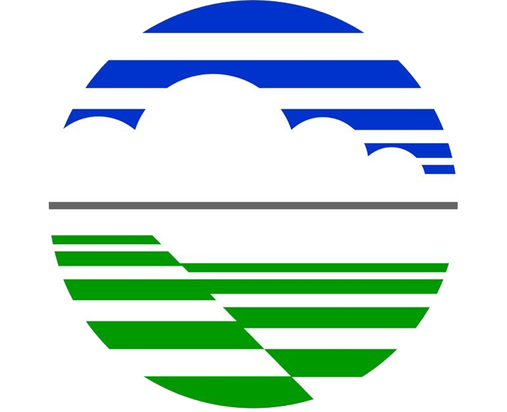
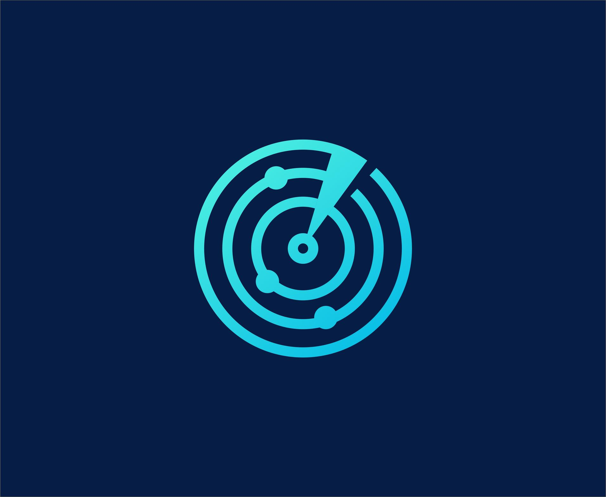

MARLIN
Marine Current Intelligence System
⚠️ DATA TIDAK UPDATE
📊
Analisis Titik
✖
Kecepatan Arus (m/s)
0
1
2
3
4+

FORECASTER MODE
Tampilkan Panel Pelabuhan
▲
PELABUHAN KETAPANG
AMAN
Waktu Terpilih (
-
)
-
m/s
(
-
Knot)
Arah:
-
PELABUHAN GILIMANUK
AMAN
Waktu Terpilih (
-
)
-
m/s
(
-
Knot)
Arah:
-
⬅️ Sebelumnya
🔄
⏱️
Memuat...
Selanjutnya ➡️